Characters in Harry Potter
เป็นเวลาร่วม 20 ปีแล้วที่หนังภาคแรกของเรื่อง แฮร์รี่ พอตเตอร์ (Harry Potter) ได้ออกฉาย
ทั้งเหล่านักแสดงที่เล่นเป็นตัวละครที่เราชื่นชอบ และบรรดาผู้ชมล้วนเติบโตขึ้นไปพร้อม ๆ กับหนัง
อันที่จริงเราเคยชินกับการได้เห็นคนเหล่านี้เติบโตขึ้น โดยที่ส่วนใหญ่ได้มองข้ามการเปลี่ยนแปลงทางร่างกายของพวกเขาไป
นั่นเลยเป็นเหตุผลว่าทำไมวิวัฒนาการทางบทบาทของพวกเขาในหนังจึงควรค่าแก่การจดจำ
เพราะพวกเขาได้เป็นส่วนหนึ่งในวัยเด็กของเรา และยังเข้ามาประทับอยู่ในใจเรา
1.Harry Poter
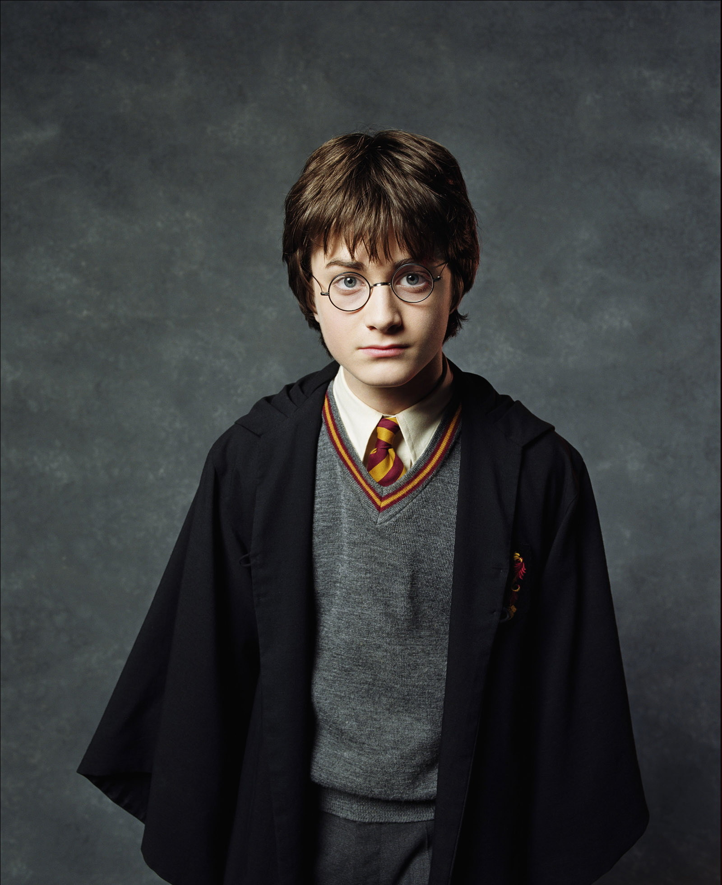
แฮร์รี่(Harry) เป็นตัวละครหลักของหนังทั้งหมด แดเนียล แรดคลิฟฟ์(Daniel Radcliffe)
คือนักแสดงที่เล่นบทนี้ เมื่อย้อนกลับไปตอนที่เริ่มถ่ายทำหนังในภาคแรก เขามีอายุเพียง 11 ขวบเท่านั้น
และตอนที่หนังแฮร์รี่พอตเตอร์กับเครื่องรางยมทูต ภาค 2 ได้ออกฉายรอบปฐมทัศน์ นักแสดงหนุ่มก็มีอายุ 21 ปีแล้ว
นั่นหมายความว่าเขาใช้เวลาในชีวิตเป็น 10 ปีกับการเล่นบทบาทเดิม และนำเวทมนตร์มาสู่ชีวิตของเราทุกคน
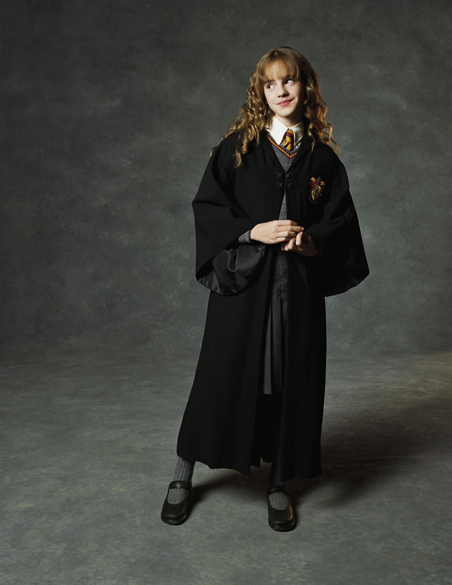
ทันทีที่ย่างเข้าสู่ฮอกวอตส์ เฮอร์ไมโอนี่(Hermione) ได้กลายเป็นเพื่อนสนิทของแฮร์รี่(Harry) กับรอน(Ron) แล้วด้วยเหตุนี้เอง
ไม่นานนักเธอจึงเป็นหนึ่งในบุคคลสำคัญของฮอกวอตส์ เธอพร้อมช่วยแก้ปัญหาอยู่เสมอไม่ว่าจะเป็นปัญหาใดก็ตาม
เนื่องจากความเฉลียวฉลาด ความขยัน และความกล้าหาญของเธอ จึงทำให้เธอกลายเป็นหนึ่งในแม่มดที่เก่งที่สุดในโรงเรียน
เอ็มมา วัตสัน(Emma Watson) คือนักแสดงที่นำตัวละครนี้ขึ้นมาโลดแล่นอยู่บนจอ ตอนที่หนังภาคแรกหรือ แฮร์รี่พอตเตอร์กับศิลาอาถรรพ์ ออกฉาย
เธอมีอายุเพียง 10 ขวบเท่านั้น และเธอสิ้นสุดสัญญาหนังในวัย 20 ปี ซึ่งเป็นหนังภาคสุดท้ายตอนปี 2011
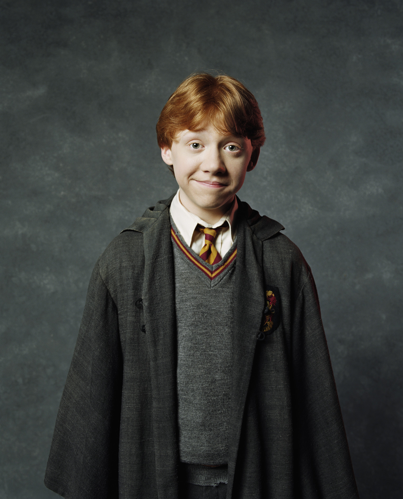
รอน(Ron) เป็นลูกชายคนที่หกของครอบครัววีสลีย์(Weasley) และได้เข้าเรียนที่ฮอกวอตส์เหมือนกับพวกพี่ชาย
เขาเป็นเพื่อนที่ดีที่สุดของแฮร์รี่(Harry) อีกทั้งเป็นคนค่อนข้างขี้อายและประหม่า แม้ว่าเขาจะไม่ใช่เด็กที่กล้าหาญที่สุด
แต่ว่าเขาก็เต็มใจที่จะช่วยเหลือเพื่อน ๆ ของเขาอยู่เสมอเลย รูเพิร์ต กรินต์(Rupert Grint) คือนักแสดงที่นำตัวละครนี้ขึ้นมาโลดแล่นอยู่บนจอหนัง
โดยเขาเริ่มถ่ายหนังเรื่องนี้ตอนอายุ 12 ปี และถ่ายทำภาคสุดท้ายตอนอายุ 23 ปี ซึ่งหมายความว่าเขาเป็นพี่คนโตสุดในบรรดาตัวละครเอก 3 ตัวเลยทีเดียว
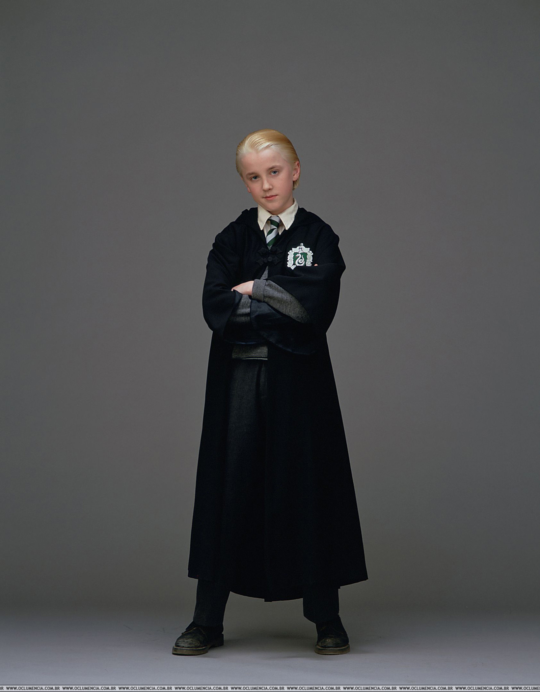
เดรโก(Draco) เป็นลูกชายคนเล็กของตระกูลมัลฟอย ก็อย่างที่เราทราบกันดีว่าเขาอยู่บ้านสลิธีริน
ตัวละครนี้โด่งดังมาจากการมีบุคลิกอันแปลกประหลาด อารมณ์ฉุนเฉียว และลักษณะทั่วไปของเด็กนิสัยเสีย
นอกจากนี้เขากับเพื่อนผู้ซื่อสัตย์ของเขาอีก 2 คน คือแครบ(Crabbe) กับกอยล์(Goyle) คอยทำให้แฮรรี่(Harry) กับเพื่อนๆ
ใช้ชีวิตในโรงเรียนได้ยากขึ้นอีกด้วย ทอม เฟลตัน(Tom Felton) เป็นนักแสดงที่มารับบทนี้ โดยเขาแสดงเป็นคู่อริของแฮร์รี่(Harry)
มาตั้งแต่หนังภาคแรกเมื่อเขาอายุ 14 ปี มาจนถึงหนังภาคสุดท้ายตอนอายุ 24 ปี
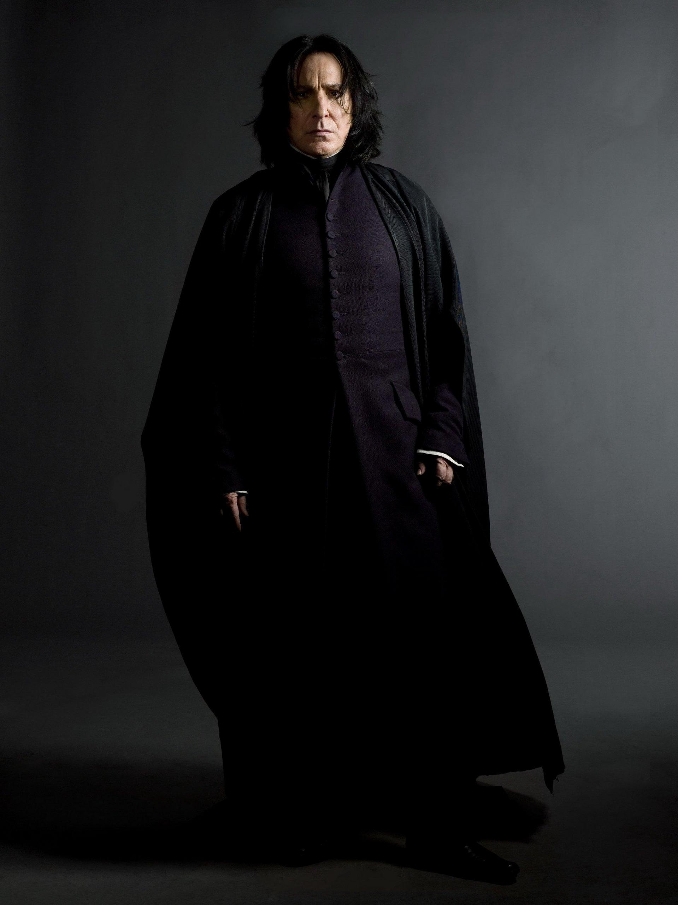
เซเวอร์รัส(Severus) เป็นศาสตราจารย์วิชาปรุงยาและป้องกันตัวจากศาสตร์มืด
อีกทั้งยังได้เป็นอาจารย์ใหญ่ของโรงเรียนฮอกวอตส์ในหนังบางภาคอีกด้วย เขาอยู่บ้านสลิธีรินเหมือนกับเดรโก(Draco)
และเป็นที่รู้จักกันในฐานะศาสตราจารย์ที่เข้มงวดมาก โดยเฉพาะอย่างยิ่งกับแฮร์รี่(Harry) และคนอื่นๆ จากบ้านกริฟฟินดอร์
นักแสดงที่นำบทนี้ขึ้นมาโลดแล่นอยู่บนจอคือ อลัน ริคแมน(Alan Rickman) โดยเขาเล่นหนังภาคแรกในวัย 55 ปี และสิ้นสุดสัญญาตอนอายุ 65 ปี
ซึ่งเป็นตอนที่เขาแสดงในหนังภาคสุดท้ายหรือ แฮร์รี่พอตเตอร์ กับเครื่องรางยมทูต ภาค 2
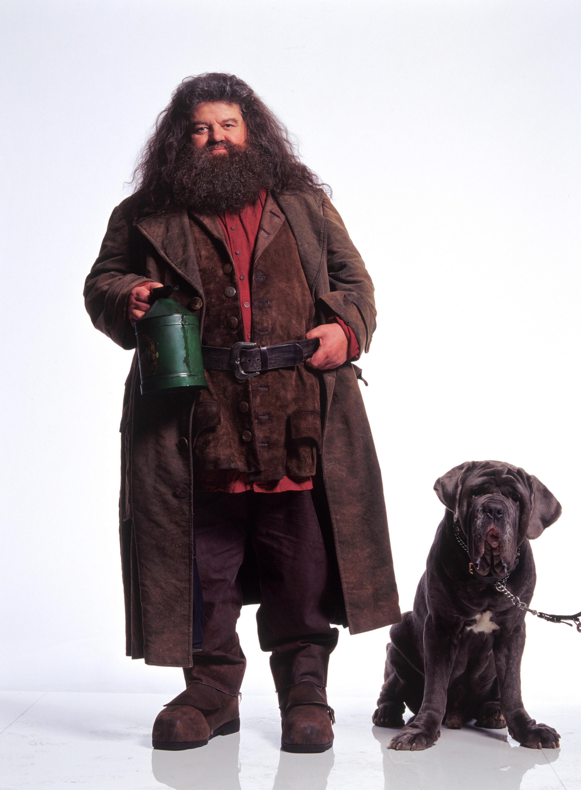
แฮกริด(Hagrid) เป็นพ่อมดครึ่งยักษ์ ผู้คุมของฮอกวอตส์ และผู้รับผิดชอบกุญแจและพื้นที่ของโรงเรียน
เขาได้รับมอบหมายให้พาแฮร์รี่ พอตเตอร์(Harry Potter) มารู้จักกับโลกเวทมนตร์อีกครั้ง และได้กลายเป็นเพื่อนสนิทกับเขาในเวลาต่อมา
นักแสดงที่ได้รับบทนี้คือ ร็อบบี้ โคลเทรน (Robbie Coltrane) โดยเขาในวัย 51 ปีได้ปรากฏตัวในหนังเรื่องนี้เป็นครั้งแรก
และร่วมแสดงไปจนถึงหนังภาคสุดท้ายหรือ แฮร์รี่พอตเตอร์ กับเครื่องรางยมทูต ภาค 2 ซึ่งเขามีอายุ 61 ปี
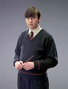
เนวิลล์ ลองบัตท่อม(Neville Longbottom) เป็นนักเรียนฮอกวอตส์ที่ได้รับเลือกเข้าไปอยู่บ้านกริฟฟินดอร์
เขาถูกอธิบายว่าเป็นพ่อมดที่มีบุคลิกขี้อายและเก็บตัว แต่นั่นก็ไม่ได้หยุดให้เขาได้พิสูจน์ตัวเอง ว่าเขาเป็นผู้ใช้เวทมนตร์ที่ยอดเยี่ยมมากแค่ไหน
รวมทั้งยังเป็นเพื่อนที่ซื่อสัตย์และพรรคพวกของพอตเตอร์(Potter) อีกด้วย แมทธิว ลูอิส(Matthew Lewis) รับบทเป็นตัวละครตัวนี้
ตอนที่เขามีอายุ 12 ขวบ และในหนังภาคสุดท้าย เขามีอายุ 22 ปี
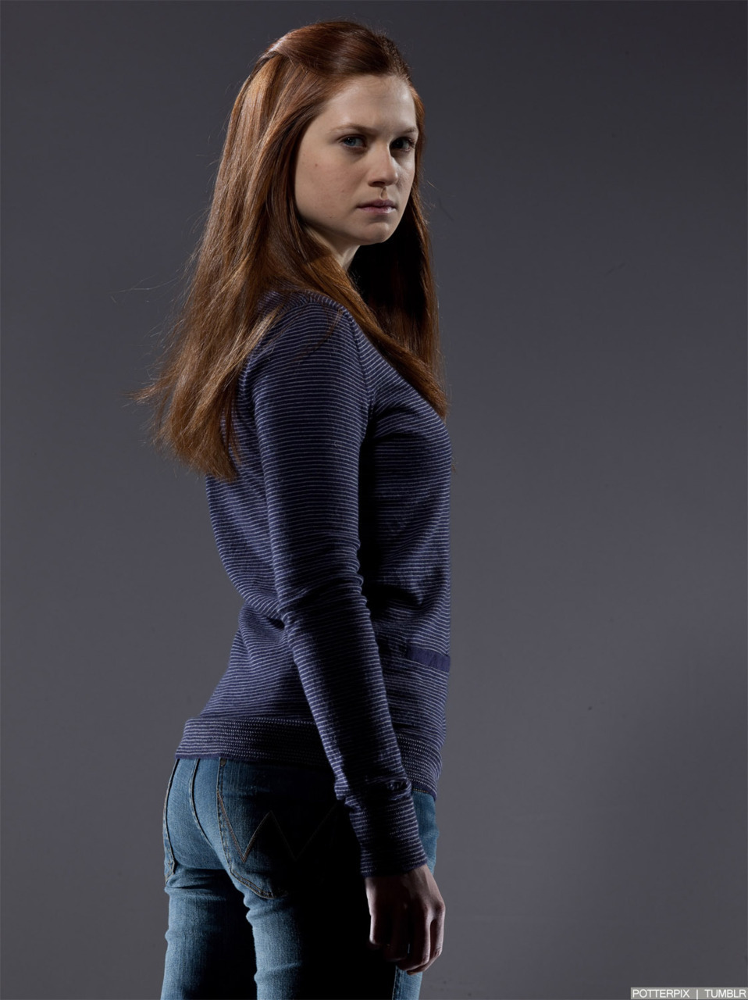
จินนี่(Ginny) เป็นน้องสาวของวีสลีย์(Weasley) และถือว่าเธอเป็นผู้หญิงคนเดียวในครอบครัว ถ้าไม่นับแม่ของรอน(Ron)
เธอเป็นนักเรียนฮอกวอตส์และอยู่บ้านกริฟฟินดอร์เหมือนกับรอน(Ron) และพี่น้องคนอื่น ๆ ของเธอ ผู้รับบทนี้คือ บอนนี่ ไรท์(Bonnie Wright)
โดยเธอได้ปรากฏตัวครั้งแรกในหนัง แฮร์รี่พอตเตอร์กับศิลาอาถรรพ์ ตอนที่เธออายุ 9 ขวบ และเมื่อหนังภาคสุดท้ายเข้าฉายในปี 2011 เธอก็มีอายุ 20 ปี
ซึ่งนั่นทำให้เธอเป็นหนึ่งในนักแสดงหญิงที่อายุน้อยที่สุดของหนังเรื่องนี้
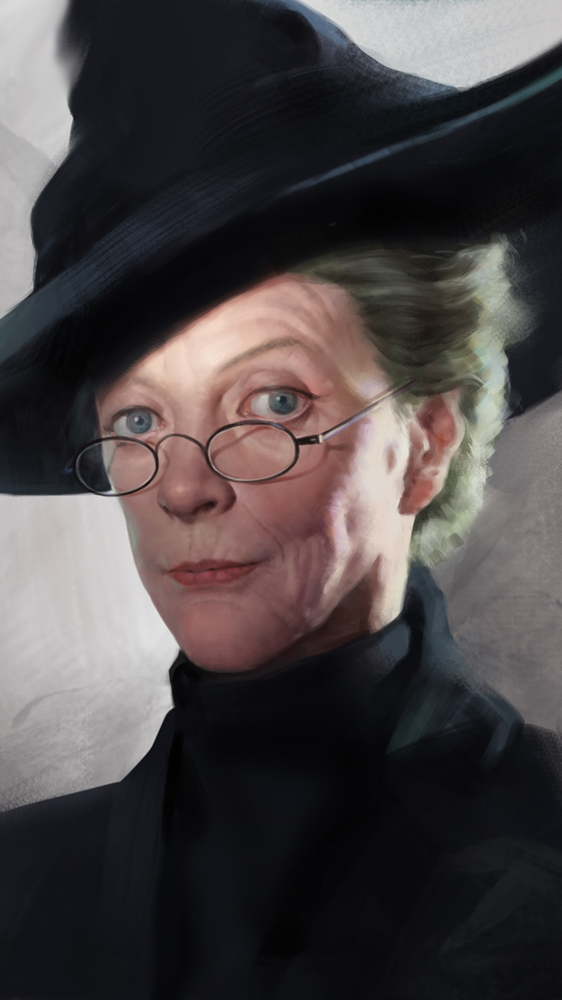
มิเนอร์ว่า(Minerva) เป็นศาสตราจารย์ “ผู้แปลงร่างได้” หรือแอนิเมจัส และเป็นหัวหน้าของบ้านกริฟฟินดอร์
แม้ว่าเธอจะมีชื่อเสียงในเรื่องความเป็นคนค่อนข้างพูดตรง ๆ ในบางครั้ง แต่เธอก็คอยให้ความรู้และปกป้องนักเรียนของเธออยู่เสมอ
รวมไปถึงเจ้าหน้าที่ของโรงเรียนคนอื่น ๆ ด้วย แม็กกี้ สมิธ(Maggie Smith) ในวัย 67 ปี รับบทเป็นตัวละครตัวนี้ในหนังภาคแรก และมีอายุ 77 ปีตอนที่เธอเล่นหนังภาคสุดท้าย
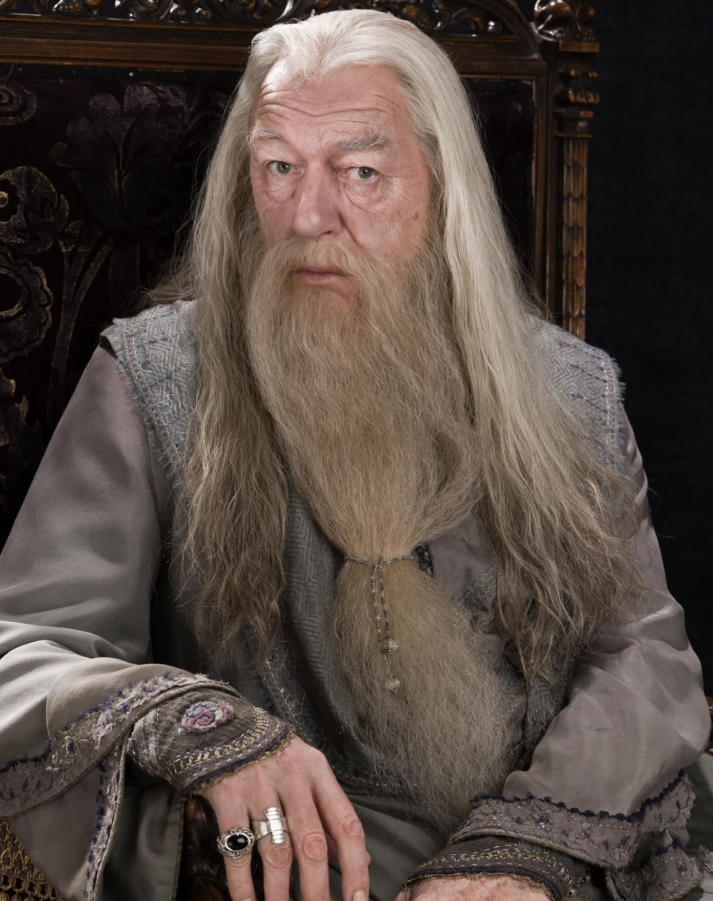
ศาสตราจารย์อัลบัส ดัมเบิลดอร์(Albus Dumbledore) เป็นอาจารย์ใหญ่ของโรงเรียนคาถาพ่อมดแม่มดและเวทมนตร์ศาสตร์ฮอกวอตส์
อีกทั้งยังเป็นเพื่อนที่ดีและผู้พิทักษ์ของแฮร์รี่ พอตเตอร์(Harry Potter) ซึ่งนับว่าเป็นประโยชน์เลยทีเดียว เพราะเขากลายเป็นหนึ่งในพ่อมดที่มีอำนาจมากที่สุดของนิยายเรื่องนี้
ในหนังภาคแรกกับภาคสอง นักแสดงที่รับบทเป็นดัมเบิลดอร์ (Dumbledore) คือ ริชาร์ด แฮร์ริส (Richard Harris) โดยเขามีอายุ 72 ปี
ตอนที่หนังภาคแรกออกฉาย แต่ทว่าตั้งแต่ภาค 3 ไปจนถึง แฮร์รี่พอตเตอร์กับเครื่องรางยมทูต ภาค 2 นักแสดงที่ชื่อว่า ไมเคิล แกมบอน(Michael Gambon) ในวัย 64 ปี
ได้มารับบทนี้แทน และเล่นหนังเรื่องนี้ไปจนถึงอายุ 71 ปี

เฟร็ด(Fred) กับจอร์จ(George) เป็นฝาแฝดและพี่ของรอน วีสลีย์(Ron Weasley) พวกเขาอยู่บ้านกริฟฟินดอร์เหมือนกับวีสลีย์(Weasley)
คนอื่น ๆ อีกทั้งเป็นที่รู้จักกันในนามจอมเล่นพิเรนทร์ผู้เชี่ยวชาญ และยังเป็นสมาชิกของทีมควิดดิชอีกด้วย เจมส์(James) กับโอลิเวอร์ เฟลป์ส(Oliver Phelps)
ได้นำตัวละครที่สร้างเสียงหัวเราะนี้ขึ้นมาโลดแล่นอยู่บนจอ โดยพวกเขานั้นมีอายุ 15 ปีตอนหนังภาคแรก และมีอายุ 25 ปีตอนหนังภาคสุดท้าย
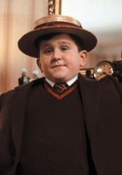
ดัดลีย์(Dudley) เป็นลูกพี่ลูกน้องของแฮร์รี่(Harry) โดยเป็นลูกชายของเวอร์นอน(Vernon) กับเพทูเนีย เดอร์สลีย์(Petunia Dursley)
เขาเป็นเด็กที่เอาแต่ใจมาก ๆ และทำทุกอย่างที่ตัวเองต้องการโดยไม่คำนึงถึงสิ่งที่พ่อแม่บอกเขาอยู่เสมอ แล้วก็ดูเหมือนว่ากิจกรรมโปรดของเขากับพ่อแม่ก็คือ
การทำให้ชีวิตของแฮร์รี่(Harry) เผชิญกับความลำบาก นักแสดงที่เล่นเป็นตัวละครนี้คือ แฮร์รี่ เมลลิ่ง(Harry Melling) โดยเขาเริ่มทำงานกับหนังเรื่องนี้ตอนอายุ 11 ขวบ
และตอนที่ถ่ายทำเรื่อง แฮร์รี่พอตเตอร์กับเครื่องรางยมทูต ภาค 2 ซึ่งเป็นภาคสุดท้ายของหนัง เขาก็มีอายุ 20 ปีแล้ว
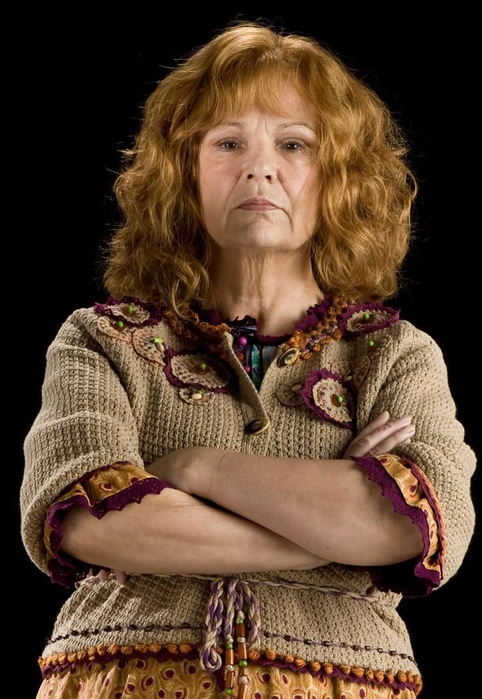
จูลี่ วอลเตอร์ส(Julie Walters) คือชื่อของนักแสดงที่เล่นเป็นตัวละครมอลลี่ วีสลีย์(Molly Weasley) แม่ของรอน(Ron) เธอปรากฏตัวอยู่ในหนังทุกภาค
ไม่เหมือนกับดัดลีย์(Dudley) ตัวละครของเธอเป็นที่รู้จักกันในเรื่องของความเข้มงวดและแสดงความรักในเวลาเดียวกัน เธอมักเป็นห่วงสวัสดิภาพของลูก ๆ และเพื่อน ๆ
ของครอบครัวเธออยู่เสมอ ซึ่งรวมไปถึงแฮร์รี่(Harry)ด้วย ในหนังภาคแรกตอนปี 2001 นักแสดงสาวมีอายุ 51 ปี และเมื่อหนังภาคสุดท้ายได้ถูกถ่ายทำ
วอลเตอร์ส (Walters) ก็มีอายุ 61 ปีแล้ว
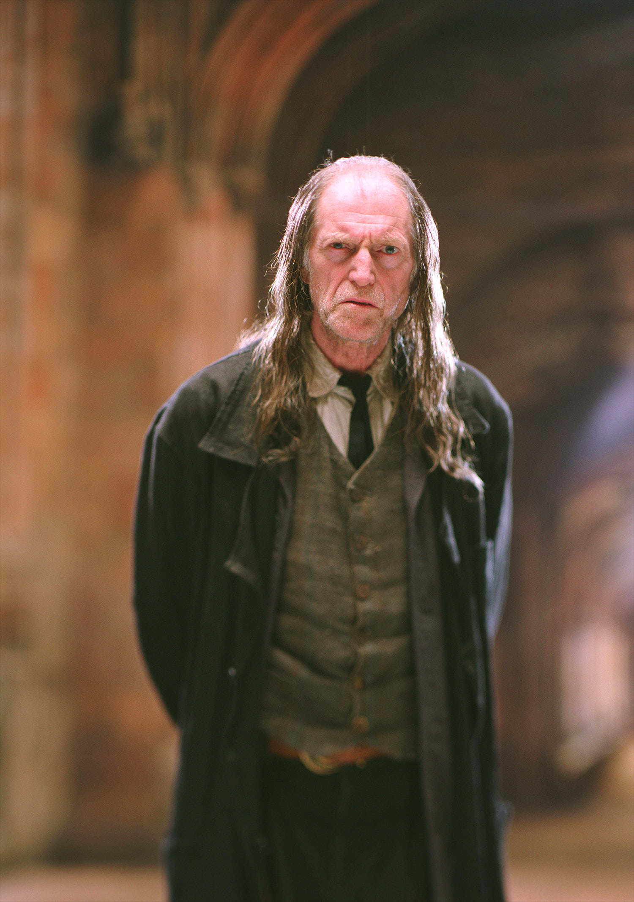
ฟิลช์(Filch) เป็นภารโรงประจำโรงเรียนฮอกวอตส์ เขาคือชายขี้หงุดหงิดที่มักพาแมวของเขาที่ชื่อคุณนายนอร์ริส(Mrs. Norris) ไปไหนด้วยเสมอ
งานหลักอย่างหนึ่งของเขาคือการรักษาระเบียบในทางเดินของโรงเรียน และคอยตรวจดูให้แน่ใจว่าไม่มีนักเรียนมาก่อกวนแถวนั้น
ในหนังภาคแรก แฮร์รี่พอตเตอร์กับศิลาอาถรรพ์ ที่เปิดตัวตอนปี 2001 นักแสดงที่ชื่อ เดวิด จอห์น แบรดลีย์(David John Bradley) ในวัย 59 ปีได้มารับบทนี้
และในหนังภาคสุดท้ายหรือ แฮร์รี่พอตเตอร์กับเครื่องรางยมทูต ภาค 2 เขาก็มีอายุ 69 ปี